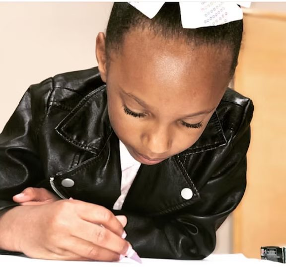

OUR MINISTRIES
Find Your Place to Grow
Connect, serve, and build your faith with the IGotoHim family.

Sunday Worship
Sundays at 11 AM, in person or live on Facebook. Prayer requests are accepted daily.
Learn More →
Hosanna Kids
Sunday kids services where children learn about Jesus in a fun, safe place.
Learn More →
Outreach & Service
Monthly Service Sundays and local giveback events that put our faith into action.
Learn More →
Bible Study
A safe, supportive place to study the Bible in depth and ask the hard questions. Wednesdays on Zoom.
Learn More →Questions & Prayer
Have questions about God, Jesus or the Holy Spirit? We would love to help you find answers.
Learn More →Serve With Us
Volunteer with Service Sundays and community events. Use your gifts to serve others.
Learn More →